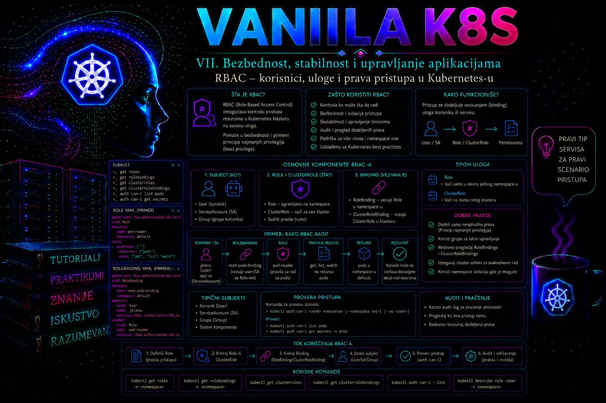

Vanilla Kubernetes

Kubernetes klaster nije bezbedan samo zato što je API server dostupan preko TLS-a i zato što korisnici moraju da se prijave. Autentikacija potvrđuje identitet klijenta, ali tek autorizacija određuje koje operacije taj identitet sme da izvrši. Role-Based Access Control, odnosno RBAC, predstavlja standardni Kubernetes mehanizam za povezivanje korisnika, grupa i servisnih naloga sa dozvoljenim operacijama nad API resursima. Njegova svrha nije samo sprečavanje neovlašćenog pristupa već i kontrolisano delegiranje administracije, razdvajanje odgovornosti, smanjenje posledica kompromitovanih identiteta i stvaranje proverljivog modela ovlašćenja.
RBAC treba posmatrati kao deo šireg lanca kontrole pristupa. Zahtev najpre stiže do kube-apiserver procesa, zatim prolazi autentikaciju, autorizaciju i admission kontrolu. Uspešna autentikacija ne garantuje odobrenje operacije, a RBAC dozvola ne garantuje da će objekat biti prihvaćen: admission politika može odbiti manifest koji krši bezbednosna ili organizaciona pravila. RBAC takođe nije zamena za mrežnu segmentaciju, zaštitu tajni, Pod Security pravila, audit evidenciju ili upravljanje identitetima.
Kako Kubernetes donosi odluku o pristupu
Nakon autentikacije Kubernetes raspolaže korisničkim imenom, pripadnošću grupama i, u slučaju servisnog naloga, identitetom oblika system:serviceaccount:<namespace>:<ime>. Autorizator zatim razmatra atribute zahteva: API grupu, resurs, podresurs, namespace, ime objekta i glagol operacije. Za nerazvojne URL putanje, kao što su /healthz ili /version, razmatra se URL umesto API resursa.
Kubernetes API glagoli nisu uvek isto što i HTTP metode. Operacije čitanja najčešće se predstavljaju glagolima get, list i watch, dok promene koriste create, update, patch i delete. Posebne operacije mogu imati glagole kao što su bind, escalate, impersonate i approve. Podresursi se autorizuju odvojeno: dozvola za čitanje poda ne podrazumeva dozvolu za pods/log, a pravo izmene Deployment objekta ne mora automatski dati pravo izmene podresursa deployments/scale.
RBAC pravila su isključivo aditivna. Ne postoji eksplicitno pravilo „deny” kojim se poništava drugo odobrenje. Ako bilo koji važeći RoleBinding ili ClusterRoleBinding odobri traženu operaciju, RBAC autorizator je može dozvoliti. Zbog toga administrator ne sme analizirati samo jednu ulogu: efektivna prava subjekta predstavljaju zbir svih njegovih direktnih i grupnih vezivanja. Kada nijedan aktivni autorizacioni mehanizam ne odobri zahtev, pristup se odbija.
Na klasteru može biti aktivno više autorizatora, na primer Node, RBAC i webhook autorizator. Konačna odluka zato nije nužno rezultat samo RBAC pravila: autorizatori se pozivaju redosledom iz konfiguracije API servera, a odluka allow ili deny završava obradu; samo odgovor bez mišljenja prosleđuje zahtev sledećem autorizatoru. Savremeni klaster može autorizatore definisati strukturisanom datotekom preko --authorization-config, dok starije i jednostavnije instalacije često koriste --authorization-mode; ta dva načina ne koriste se istovremeno. Pre dijagnostike treba utvrditi stvarnu konfiguraciju konkretne kontrolne ravni, naročito kada rezultat nije moguće objasniti samo RBAC objektima.
Role, ClusterRole, RoleBinding i ClusterRoleBinding
RBAC API koristi četiri osnovne vrste objekata. Role sadrži pravila koja važe unutar jednog namespace-a i sama po sebi nikome ne dodeljuje pristup. ClusterRole je klasterski objekat. Može opisivati prava nad klasterskim resursima, kao što su Node ili PersistentVolume, prava nad namespaced resursima u jednom ili više namespace-ova, kao i pristup nerazvojnim URL putanjama API servera.
RoleBinding povezuje korisnika, grupu ili ServiceAccount sa Role objektom u istom namespace-u. RoleBinding može upućivati i na ClusterRole, ali tada prava te ClusterRole važe samo u namespace-u u kojem se RoleBinding nalazi. Ovo je važan enterprise obrazac: jedna centralno održavana ClusterRole može se selektivno dodeljivati različitim timovima u njihovim namespace-ovima. ClusterRoleBinding daje prava iz ClusterRole objekta na nivou celog klastera i zato zahteva znatno strožu kontrolu promene.
| Objekat | Opseg objekta | Tipična namena | Rizik pogrešne upotrebe |
|---|---|---|---|
| Role | Jedan namespace | Prava aplikativnog tima u sopstvenom namespace-u | Preširoki glagoli ili pristup tajnama unutar namespace-a |
| ClusterRole | Klaster | Standardizovana prava ili pristup klasterskim resursima | Neplanirana prava nad svim namespace-ovima |
| RoleBinding | Jedan namespace | Lokalno vezivanje Role ili ClusterRole pravila | Pogrešan subjekt ili vezivanje privilegovane ClusterRole |
| ClusterRoleBinding | Ceo klaster | Centralni administratori i klasterske komponente | Potpuna ili široka kompromitacija klastera |
Polje roleRef u vezivanju je nepromenljivo. Ako je vezivanje povezano sa pogrešnom ulogom, objekat treba obrisati i ponovo napraviti sa ispravnim roleRef. Subjekti u polju subjects mogu se menjati, ali svaka takva promena mora proći istu kontrolu kao i novo dodeljivanje prava. Za ServiceAccount subjekt namespace mora biti eksplicitno naveden; za korisnike i grupe namespace se ne navodi jer ti identiteti nisu Kubernetes namespaced objekti.
Korisnici, grupe i servisni nalozi
Kubernetes nema API objekat za običnog korisnika. Ljudske identitete obezbeđuje spoljni sistem, na primer OIDC identity provider, klijentski sertifikati ili autentikacioni proxy. RBAC samo koristi korisničko ime i grupe koje autentikacioni sloj dostavi. Zato brisanje RoleBinding objekta ne gasi korisnički nalog, a uklanjanje korisnika iz poslovnog imenika ne uklanja automatski zastarele RBAC reference. Enterprise proces mora povezati životni ciklus zaposlenog, upravljanje grupama i periodičnu recertifikaciju Kubernetes pristupa.
Prava za ljude je poželjno dodeljivati grupama, a ne pojedinačnim korisnicima. Tako se odobrenje, promena radnog mesta i ukidanje pristupa obavljaju u centralnom identity provideru, dok Kubernetes manifest ostaje stabilan. Imena koja počinju prefiksom system: rezervisana su za Kubernetes sistemske identitete i grupe; organizacione grupe ne treba imenovati tim prefiksom.
ServiceAccount je namespaced Kubernetes identitet namenjen procesima. Pod, kontroler ili CI/CD posao može ga koristiti za pozivanje API-ja. Savremeni Kubernetes koristi kratkotrajne, rotirajuće tokene dobijene preko TokenRequest mehanizma i projektovane u pod. Ručno kreiranje dugotrajnog Secret tokena treba izbegavati osim kada postoji dokumentovana kompatibilnosna potreba. Kada aplikacija ne koristi Kubernetes API, preporučljivo je postaviti automountServiceAccountToken: false, čime se smanjuje mogućnost zloupotrebe tokena nakon kompromitacije kontejnera.
Pravila, API grupe, resursi i podresursi
Svako pravilo sadrži skup API grupa, resursa i glagola. Osnovna, odnosno core API grupa označava se praznim stringom. Deployment pripada grupi apps, Job grupi batch, a Role i RoleBinding grupi rbac.authorization.k8s.io. Resursi se navode množinom i malim slovima, kao u API-ju: pods, configmaps i deployments.
apiVersion: rbac.authorization.k8s.io/v1
kind: Role
metadata:
name: primer-citanja
namespace: aplikacija-dev
rules:
- apiGroups: [""]
resources: ["pods", "pods/log", "services", "configmaps"]
verbs: ["get", "list", "watch"]
- apiGroups: ["apps"]
resources: ["deployments", "replicasets"]
verbs: ["get", "list", "watch"]
Pravo list može otkriti sve objekte određene vrste u opsegu, dok watch omogućava kontinuirano praćenje promena. Obe dozvole mogu izložiti više podataka nego pojedinačni get. Polje resourceNames može ograničiti neke operacije na imenovane objekte, ali nije univerzalni mehanizam za izolaciju: zahtevi create ne mogu se ograničiti imenom budućeg objekta, a običan list ili watch ne može se pouzdano svesti na jedan objekat bez odgovarajućeg field selector zahteva. Za složenije uslove potrebne su admission politike ili drugi kontrolni mehanizmi.
Zvezdica u poljima apiGroups, resources ili verbs znači sve sadašnje i buduće vrednosti koje odgovaraju pravilu. Takva uloga može neprimetno dobiti pristup novom resursu nakon instaliranja CRD-a ili nadogradnje platforme. Zbog toga se wildcard pravila koriste samo kada je operativno opravdano, uz formalnu procenu rizika i periodičnu reviziju.
Princip najmanjih privilegija i skriveni putevi eskalacije
Najmanje privilegije ne znače samo uklanjanje glagola delete. Administrator mora proceniti šta se može postići indirektno. Korisnik koji sme da kreira Pod u namespace-u često može da izvršava proizvoljan kod pod identitetom dostupnog ServiceAccount-a, montira dozvoljene volumene, čita promenljive okruženja i pristupi servisima dostupnim iz tog namespace-a. Pravo kreiranja workload objekata zato ne treba automatski tretirati kao bezazleno razvojno pravo.
Čitanje Secret objekata predstavlja pristup njihovom sadržaju, iako su vrednosti prikazane u base64 obliku. Pravo kreiranja poda može takođe omogućiti montiranje Secret objekata koje podov servisni nalog i admission pravila dopuštaju. Pristup podresursima pods/exec, pods/attach, pods/portforward i pods/ephemeralcontainers može zaobići uobičajene operativne granice, izložiti podatke procesa ili omogućiti izvršavanje komandi u aplikativnom okruženju.
Posebno su rizična prava izmene Role, ClusterRole, RoleBinding i ClusterRoleBinding objekata. Kubernetes sprečava korisnika da običnim kreiranjem ili izmenom uloge dodeli privilegije koje sam nema, osim ako poseduje eksplicitno pravo escalate nad odgovarajućom vrstom uloge. Slično, korisnik ne može proizvoljno vezati ulogu čije privilegije nema bez dozvole bind. Ove zaštite su važne, ali nisu zamena za restriktivan pristup RBAC objektima. Dozvole impersonate, approve nad zahtevima za sertifikate i prava nad admission ili webhook konfiguracijama takođe mogu predstavljati klasterski put eskalacije.
Ugrađene ClusterRole uloge, kao što su cluster-admin, admin, edit i view, korisne su kao početni model, ali nisu automatski odgovarajuće za svaku organizaciju. Uloga cluster-admin preko ClusterRoleBinding objekta daje praktično potpunu kontrolu nad klasterom. Čak i kada se kroz RoleBinding ograniči na namespace, ona daje veoma široka prava unutar tog namespace-a. Uloga edit može omogućiti pristup ServiceAccount identitetima i pokretanje workload-a, dok view namerno ne daje čitanje Secret objekata. Pre upotrebe ugrađene uloge treba pregledati njena stvarna pravila na konkretnoj verziji klastera.
Pravo menjanja workload-a mora se proceniti zajedno sa admission politikama, dostupnim ServiceAccount nalozima, volumenima i bezbednosnim profilom poda. Korisnik koji ne može direktno da pročita Secret može ga posredno izložiti ako sme da napravi Pod koji ga montira; korisnik koji može izabrati proizvoljan serviceAccountName može pokrenuti kod sa pravima privilegovanijeg servisnog naloga. Slično tome, CRD može izgledati bezazleno, ali njegov kontroler može u ime korisnika stvarati podove, menjati tajne ili druge privilegovane resurse. Najmanje privilegije zato se dokazuju analizom dostižnih posledica, a ne samo čitanjem imena glagola i resursa.
Impersonacija: kontrolisana simulacija tuđeg identiteta
Impersonacija omogućava autentikovanom klijentu da API serveru zatraži da ostatak zahteva obradi kao drugi korisnik ili grupa. API server najpre autentikuje stvarnog pozivaoca, zatim proverava da li on sme da koristi glagol impersonate nad traženim atributima, pa tek onda zamenjuje korisničke podatke i obavlja redovnu autorizaciju nad impersoniranim identitetom. Zbog toga kubectl --as nije lokalna simulacija niti promena kubeconfig naloga: to je stvarni API zahtev sa bezbednosno osetljivim zaglavljima i mora ostaviti audit trag o izvornom i impersoniranom identitetu.
Kubernetes razlikuje users, groups i serviceaccounts u osnovnoj API grupi, kao i uids i userextras/<ime> u grupi authentication.k8s.io. kubectl podržava korisnika i ponovljivu opciju --as-group, ali ne podržava impersoniranje UID i extra polja. Impersonacija nije namespaced privilegija: dodeljuje se kroz ClusterRole i ClusterRoleBinding. Ne treba davati wildcard pravo nad svim korisnicima i grupama kada se resourceNames može upotrebiti za tačno odobrene identitete.
apiVersion: rbac.authorization.k8s.io/v1
kind: ClusterRole
metadata:
name: ograniceni-rbac-tester
rules:
- apiGroups: [""]
resources: ["users"]
verbs: ["impersonate"]
resourceNames: ["oidc:test-korisnik"]
- apiGroups: [""]
resources: ["groups"]
verbs: ["impersonate"]
resourceNames: ["tashizza:app-deployers"]
Ovo pravilo samo određuje koga primalac uloge sme da impersonira; ne dodeljuje mu automatski prava impersoniranog subjekta dok ih taj subjekt nema kroz sopstvena vezivanja. Ipak, kompromitovanje naloga sa impersonation privilegijom može postati kompromitovanje svih dozvoljenih ciljnih identiteta. Dodela zato mora imati usku listu resourceNames, kratko poslovno opravdanje, odvojeno odobrenje, centralni audit i periodičnu recertifikaciju. Impersoniranje grupa system:masters ili široko privilegovanih servisnih naloga praktično je ekvivalentno administrativnom pristupu i ne pripada rutinskom troubleshooting profilu.
Ugrađene uloge, agregacija i sistemski objekti
Kubernetes instalacija sadrži sistemske ClusterRole i ClusterRoleBinding objekte. Mnogi imaju prefiks system: i potrebni su kontrolnoj ravni ili osnovnim komponentama. API server može pri pokretanju automatski rekonstruisati nedostajuća pravila i subjekte na podrazumevanim sistemskim objektima označenim anotacijom rbac.authorization.kubernetes.io/autoupdate: "true". Ručno menjanje tih objekata može izazvati kvar komponente ili promenu koja se kasnije automatski poništi.
Agregirane ClusterRole koriste selektore oznaka da bi objedinjavale pravila drugih ClusterRole objekata. Ovaj mehanizam omogućava da CRD operator dopuni standardne uloge, na primer da resurse svoje API grupe uključi u view, edit ili admin. Agregacioni kontroler upravlja poljem rules agregirane uloge; ručno upisana pravila mogu biti zamenjena. Svaka instalacija operatora zato mora uključiti pregled njegovih RBAC manifestâ i oznaka za agregaciju, jer nova ClusterRole može proširiti prava velikog broja postojećih korisnika.
Projektovanje RBAC modela u enterprise okruženju
Održiv model počinje klasifikacijom poslova, a ne kopiranjem postojećih širokih uloga. Za svaki tim treba utvrditi koje resurse čita, koje menja, da li mu je potreban pristup logovima, izvršavanje komandi u podovima, skaliranje, upravljanje tajnama ili promena RBAC objekata. Ljudski pristup i mašinski pristup treba razdvojiti. CI/CD nalog obično ne treba ista prava kao administrator koji rešava incident, niti aplikativni tim treba klasterska prava zato što održava jedan namespace.
Preporučljiv obrazac je centralna ClusterRole za ponovljivi poslovni profil i RoleBinding u svakom odobrenom namespace-u. Tako bezbednosni tim održava jedno pravilo, dok vlasnici platforme kontrolišu opseg dodele. Posebne privilegije, poput čitanja tajni ili pods/exec, treba izdvojiti u zasebne uloge i dodeljivati samo kada postoji odobrena potreba. Privremeni pristup treba imati datum isteka u spoljašnjem sistemu identiteta ili automatizovanom procesu, pošto standardni RBAC objekti nemaju ugrađeno vremensko ograničenje.
Promene se čuvaju deklarativno u verzionisanom repozitorijumu. Pull request treba da prikazuje razliku pravila i vezivanja, poslovnog vlasnika, odobrenje, plan validacije i rollback. Direktna izmena u produkcionom klasteru opravdana je samo u kontrolisanom incidentnom postupku, nakon čega se stvarno stanje mora uskladiti sa repozitorijumom. Posebnu pažnju zahtevaju promene koje sadrže wildcard, Secret pristup, RBAC API grupu, impersonaciju ili klasterski opseg.
Provera i dijagnostika pristupa
Osnovni alat je kubectl auth can-i. On šalje proveru autorizacije za konkretan glagol, resurs i namespace. Opcija --list prikazuje dozvoljene akcije, ali rezultat može biti nepotpun kada drugi autorizatori ne mogu potpuno predstaviti svoja pravila. Opcije --as i --as-group koriste impersonaciju; operator koji ih poziva mora imati pravo da impersonira navedeni identitet ili grupu.
kubectl auth can-i get pods -n aplikacija-dev
kubectl auth can-i get pods --subresource=log -n aplikacija-dev
kubectl auth can-i create deployments.apps -n aplikacija-dev
kubectl auth can-i --list -n aplikacija-dev
kubectl auth can-i create deployments.apps \
--as=oidc:test-korisnik \
--as-group=tashizza:app-deployers \
-n aplikacija-dev
Odgovor no znači da zahtev nije odobren za testirani identitet i parametre; ne dokazuje da autentikacija stvarnog korisnika koristi očekivano ime i grupe. Kada korisnik prijavi neočekivani Forbidden, administrator proverava tačan API resurs i podresurs iz poruke, aktivni kubeconfig context, namespace, identitet koji je autentikovan, sva RoleBinding i ClusterRoleBinding vezivanja, kao i audit događaj. Greška Unauthorized najčešće ukazuje na autentikaciju ili nevažeći credential, dok Forbidden obično znači da je identitet poznat, ali nema traženu autorizaciju.
Komanda kubectl get rolebinding,clusterrolebinding -A daje inventar, ali nije dovoljna za utvrđivanje efektivnih prava jer vezivanja mogu upućivati na različite uloge i grupno članstvo dolazi iz spoljnog sistema. Za detaljnu analizu koriste se kubectl describe, YAML prikaz objekta, SubjectAccessReview provere i audit zapisi API servera. Audit je naročito važan jer dokumentuje ko je poslao zahtev, koje je impersonirane podatke koristio, nad kojim objektom je radio i kakav je bio odgovor.
kubectl auth can-i za sopstveni identitet koristi API SelfSubjectAccessReview. Za proveru drugog subjekta namenski API objekti su SubjectAccessReview i namespaced LocalSubjectAccessReview; njihovo kreiranje je privilegovana operacija i rezultat se čita iz polja status.allowed, status.denied, status.reason i status.evaluationError. SelfSubjectRulesReview i kubectl auth can-i --list daju koristan rezime, ali nisu potpuni dokaz odsustva prava kada aktivni autorizator ne može sva svoja pravila da predstavi kao listu. Za odluku o jednoj osetljivoj operaciji prednost ima konkretna access-review provera, a za prihvatanje promene kombinuju se pozitivni i negativni testovi, stvarni API poziv i audit zapis.
apiVersion: authorization.k8s.io/v1
kind: SubjectAccessReview
spec:
user: oidc:test-korisnik
groups:
- tashizza:app-deployers
resourceAttributes:
group: ""
resource: secrets
verb: get
namespace: aplikacija-dev
name: rbac-negativni-test
Ovaj manifest ne daje pravo niti trajno čuva politiku; njegovim slanjem traži se odluka aktivnog autorizacionog lanca. Ne treba ga mešati sa proverom da li navedeni korisnik zaista postoji ili da li će OIDC autentikator emitovati upravo navedene grupe. Kada aplikacija ili dodatni API server delegira odluke pomoću SubjectAccessReview API-ja, njegov servisni nalog obično dobija namensku ugrađenu ulogu system:auth-delegator; takvo vezivanje se daje samo komponenti kojoj je delegiranje zaista potrebno.
Integrisani praktikum: delegirani pristup aplikativnom timu i CI/CD servisu
Poslovni i tehnički kontekst. Organizacija uvodi namespace aplikacija-dev za razvoj internog servisa. Članovi OIDC grupe tashizza:app-deployers treba da pregledaju workload-e i logove, kreiraju i menjaju Deployment, Service i ConfigMap objekte, ali ne smeju čitati Secret objekte, menjati RBAC ili izvršavati komande u podovima. CI/CD proces koristi ServiceAccount ci-deployer i treba da raspolaže istim pravima za isporuku aplikacije. Produkcioni namespace nije obuhvaćen ovom promenom.
Referentno okruženje. Koristi se vanilla Kubernetes klaster sa uključenim RBAC autorizatorom, OIDC autentikacijom i audit logovanjem API servera. Administratorska radna stanica koristi kompatibilnu verziju kubectl, poželjno unutar jedne minor verzije od API servera. Manifesti se čuvaju u direktorijumu ~/vanilla-k8s/rbac-lab. Operator ima pravo da kreira namespace, ClusterRole, RoleBinding i ServiceAccount objekte i da impersonira testni identitet i grupu.
Cilj. Implementirati ponovljivu ClusterRole ulogu, ograničiti je RoleBinding objektima na jedan namespace, potvrditi dozvoljene operacije i dokazati da su pristup tajnama, pods/exec, RBAC promenama i drugim namespace-ovima odbijeni.
Preduslovi i početna provera. Pre promene treba sačuvati verziju klastera, aktivni context, postojeće istoimene objekte i rezultat početnih autorizacionih testova. Ako ime već postoji, ne prepisivati objekat dok se ne utvrdi njegov vlasnik i namena.
-
Pripremiti radni direktorijum i potvrditi cilj klastera.
Pogrešan context može primeniti prava na drugi klaster, pa se identitet cilja proverava pre izrade manifestâ.
Validacija: context i API adrese moraju odgovarati odobrenom razvojnom klasteru, a potrebne provere moraju vratitimkdir -p ~/vanilla-k8s/rbac-lab cd ~/vanilla-k8s/rbac-lab kubectl config current-context kubectl cluster-info kubectl version kubectl auth can-i create namespaces kubectl auth can-i create clusterroles.rbac.authorization.k8s.io kubectl auth can-i impersonate users kubectl auth can-i impersonate groupsyes. Ako impersonacija nije dozvoljena, završne testove mora izvršiti ovlašćeni bezbednosni administrator; ne treba širiti sopstvena prava samo radi laboratorijske provere. -
Proveriti da li ciljna imena već postoje.
Komande namerno ne ignorišu greške kako bi administrator razlikovao odsutan objekat od problema sa vezom ili pravima.
Očekivani rezultat: u novom scenariju komande mogu vratitikubectl get namespace aplikacija-dev kubectl get clusterrole aplikacija-deployer kubectl get rolebinding -n aplikacija-dev kubectl get serviceaccount ci-deployer -n aplikacija-devNotFound. PorukaForbiddennije potvrda da objekat ne postoji, već signal da operator nema pravo čitanja i da promena mora biti zaustavljena do provere od strane vlasnika klastera. -
Kreirati namespace i ServiceAccount bez automatskog tokena.
Fajl
01-namespace-serviceaccount.yamluspostavlja opseg rada i namenski identitet CI/CD procesa. Token se ne montira automatski u podove koji eventualno koriste ovaj nalog; CI sistem treba da koristi podržani kratkotrajni credential postupak.
Validacija: namespace mora biticat > 01-namespace-serviceaccount.yaml <<'EOF' apiVersion: v1 kind: Namespace metadata: name: aplikacija-dev labels: owner: aplikativni-tim environment: development --- apiVersion: v1 kind: ServiceAccount metadata: name: ci-deployer namespace: aplikacija-dev automountServiceAccountToken: false EOF kubectl apply --server-side \ --field-manager=platform-rbac \ -f 01-namespace-serviceaccount.yamlActive, ServiceAccount mora postojati, a poljeautomountServiceAccountTokenmora imati vrednostfalse.kubectl get namespace aplikacija-dev kubectl get serviceaccount ci-deployer \ -n aplikacija-dev \ -o yaml -
Definisati najmanji funkcionalni skup prava.
ClusterRole
aplikacija-deployerne sadrži Secret, RBAC,pods/exec,pods/attachilipods/portforward. Čitanje podova i logova omogućava operativnu proveru, dok se izmene ograničavaju na Deployment, Service i ConfigMap objekte. ReplicaSet se samo čita jer njime normalno upravlja Deployment kontroler.
Validacija: pregledati pravila iz izvornog manifesta i stanje koje je API server sačuvao. Prisustvo wildcard vrednosti, Secret resursa ili RBAC API grupe predstavlja razlog za prekid implementacije.cat > 02-clusterrole.yaml <<'EOF' apiVersion: rbac.authorization.k8s.io/v1 kind: ClusterRole metadata: name: aplikacija-deployer labels: rbac.tashizza.example/profile: application-deployer rules: - apiGroups: [""] resources: - pods - pods/log - services - configmaps verbs: - get - list - watch - apiGroups: [""] resources: - services - configmaps verbs: - create - update - patch - delete - apiGroups: ["apps"] resources: - deployments verbs: - get - list - watch - create - update - patch - delete - apiGroups: ["apps"] resources: - deployments/scale verbs: - get - update - patch - apiGroups: ["apps"] resources: - replicasets verbs: - get - list - watch EOF kubectl apply --server-side \ --field-manager=platform-rbac \ -f 02-clusterrole.yamlkubectl get clusterrole aplikacija-deployer -o yaml kubectl describe clusterrole aplikacija-deployer -
Vezati grupu i CI/CD nalog samo za razvojni namespace.
Dva RoleBinding objekta olakšavaju odvojeno ukidanje ljudskog i mašinskog pristupa. Oba koriste istu centralnu ClusterRole, ali važe samo u namespace-u
aplikacija-dev.
Validacija: oba vezivanja moraju pokazivati nacat > 03-rolebindings.yaml <<'EOF' apiVersion: rbac.authorization.k8s.io/v1 kind: RoleBinding metadata: name: aplikacija-deployers-group namespace: aplikacija-dev labels: owner: platform-team subjects: - kind: Group apiGroup: rbac.authorization.k8s.io name: tashizza:app-deployers roleRef: apiGroup: rbac.authorization.k8s.io kind: ClusterRole name: aplikacija-deployer --- apiVersion: rbac.authorization.k8s.io/v1 kind: RoleBinding metadata: name: ci-deployer-binding namespace: aplikacija-dev labels: owner: platform-team subjects: - kind: ServiceAccount name: ci-deployer namespace: aplikacija-dev roleRef: apiGroup: rbac.authorization.k8s.io kind: ClusterRole name: aplikacija-deployer EOF kubectl apply --server-side \ --field-manager=platform-rbac \ -f 03-rolebindings.yamlClusterRole/aplikacija-deployer. Grupno vezivanje mora sadržati tačan naziv grupe koji OIDC provider zaista dostavlja, a ServiceAccount subjekt mora sadržati namespace.kubectl get rolebinding \ -n aplikacija-dev \ -o wide kubectl describe rolebinding aplikacija-deployers-group \ -n aplikacija-dev kubectl describe rolebinding ci-deployer-binding \ -n aplikacija-dev -
Izvršiti pozitivne autorizacione testove.
Testni identitet
oidc:test-korisnikkoristi se samo za impersonaciju; stvarni korisnički nalog mora biti potvrđen u identity provideru. Proveravaju se čitanje podova i logova, upravljanje Deployment objektima i skaliranje.
Očekivani rezultat: svih pet provera vraćakubectl auth can-i get pods \ --as=oidc:test-korisnik \ --as-group=tashizza:app-deployers \ -n aplikacija-dev kubectl auth can-i get pods \ --subresource=log \ --as=oidc:test-korisnik \ --as-group=tashizza:app-deployers \ -n aplikacija-dev kubectl auth can-i create deployments.apps \ --as=oidc:test-korisnik \ --as-group=tashizza:app-deployers \ -n aplikacija-dev kubectl auth can-i update deployments.apps \ --subresource=scale \ --as=oidc:test-korisnik \ --as-group=tashizza:app-deployers \ -n aplikacija-dev kubectl auth can-i create deployments.apps \ --as=system:serviceaccount:aplikacija-dev:ci-deployer \ -n aplikacija-devyes. Ako grupni test vraćayes, a stvarni korisnik dobijaForbidden, verovatni uzrok je razlika između očekivanog i stvarno emitovanog OIDC korisničkog imena ili grupe, a ne greška u samom RoleBinding objektu. -
Izvršiti obavezne negativne testove.
Odbijanje privilegovanih operacija predstavlja deo kriterijuma prihvatanja, a ne sporednu proveru.
Očekivani rezultat: svih pet provera vraćakubectl auth can-i get secrets \ --as=oidc:test-korisnik \ --as-group=tashizza:app-deployers \ -n aplikacija-dev kubectl auth can-i create pods \ --subresource=exec \ --as=oidc:test-korisnik \ --as-group=tashizza:app-deployers \ -n aplikacija-dev kubectl auth can-i create rolebindings.rbac.authorization.k8s.io \ --as=oidc:test-korisnik \ --as-group=tashizza:app-deployers \ -n aplikacija-dev kubectl auth can-i create deployments.apps \ --as=oidc:test-korisnik \ --as-group=tashizza:app-deployers \ -n default kubectl auth can-i get secrets \ --as=system:serviceaccount:aplikacija-dev:ci-deployer \ -n aplikacija-devno. Neočekivaniyesznači da testirani subjekt dobija dodatna prava preko drugog RoleBinding ili ClusterRoleBinding objekta. Ne treba nasumično sužavati novu ClusterRole; najpre treba pronaći drugo vezivanje koje doprinosi efektivnim pravima. -
Primeniti funkcionalni test sa bezbednim manifestom.
Kreira se jednostavan Deployment i Service bez tajni i privilegovanih opcija. Komanda se izvršava kao testna grupa kako bi se dokazalo da autorizacija dozvoljava stvarnu API operaciju, a ne samo deklarativnu proveru.
Validacija: Deployment i Service moraju biti kreirani, rollout mora završiti porukom o uspešnom raspoređivanju, a pod mora biticat > 04-demo-workload.yaml <<'EOF' apiVersion: apps/v1 kind: Deployment metadata: name: rbac-demo namespace: aplikacija-dev spec: replicas: 1 selector: matchLabels: app: rbac-demo template: metadata: labels: app: rbac-demo spec: automountServiceAccountToken: false containers: - name: web image: registry.k8s.io/e2e-test-images/agnhost:2.53 args: - netexec - --http-port=8080 ports: - name: http containerPort: 8080 --- apiVersion: v1 kind: Service metadata: name: rbac-demo namespace: aplikacija-dev spec: selector: app: rbac-demo ports: - name: http port: 80 targetPort: http EOF kubectl apply -f 04-demo-workload.yaml \ --as=oidc:test-korisnik \ --as-group=tashizza:app-deployers kubectl rollout status deployment/rbac-demo \ -n aplikacija-dev \ --timeout=120sRunningiReady. Neuspešan image pull nije RBAC problem ako je API objekat uspešno kreiran; tada se proveravaju registry dostupnost, DNS, proxy i događaji poda.kubectl get deployment,replicaset,pod,service \ -n aplikacija-dev \ -l app=rbac-demo kubectl get events \ -n aplikacija-dev \ --sort-by=.metadata.creationTimestamp -
Dokazati odbijanje stvarnog pristupa tajnama.
Administrator kreira bezbednu zamensku tajnu, ali testni korisnik pokušava da je pročita. Vrednost nije stvarna lozinka i služi samo za proveru kontrole pristupa.
Očekivani rezultat: druga komanda vraćakubectl create secret generic rbac-negativni-test \ -n aplikacija-dev \ --from-literal=test-vrednost='BEZBEDNA-ZAMENSKA-VREDNOST' kubectl get secret rbac-negativni-test \ -n aplikacija-dev \ --as=oidc:test-korisnik \ --as-group=tashizza:app-deployersForbiddeni navodi da korisnik ne može da izvršigetnad resursomsecrets. OdgovorNotFoundnije dovoljan dokaz negativne autorizacije jer može ukazivati na pogrešno ime ili namespace. -
Pregledati audit evidenciju.
U kubeadm okruženju putanja i parametri auditovanja proveravaju se u manifestu API servera, najčešće u
/etc/kubernetes/manifests/kube-apiserver.yaml. Sama lokacija audit fajla zavisi od vrednosti parametra--audit-log-path. U upravljanom cloud klasteru evidencija se obično preuzima iz servisa pružaoca, a pristup control-plane hostu nije dostupan.
Validacija: koristiti stvarnu putanju pronađenu u manifestu umesto pretpostavljene ako se razlikuje. Audit događaj treba da sadrži testni identitet, impersonirane grupe, resurs, namespace, glagol i odgovorsudo grep -E -- \ '--audit-policy-file|--audit-log-path' \ /etc/kubernetes/manifests/kube-apiserver.yaml sudo grep -E \ 'oidc:test-korisnik|rbac-negativni-test|aplikacija-dev' \ /var/log/kubernetes/audit/audit.log | tail -n 20403za zabranjeno čitanje tajne. Kube-apiserver operativni log objašnjava kvar komponente, dok audit log prvenstveno dokumentuje API aktivnosti i bezbednosni kontekst. -
Dokumentovati stanje i merljive kriterijume prihvatanja.
Evidencija se čuva uz zahtev za promenu i Git reviziju manifestâ.
Kriterijumi prihvatanja: svi pozitivni testovi vraćajukubectl get clusterrole aplikacija-deployer -o yaml \ > accepted-clusterrole.yaml kubectl get rolebinding -n aplikacija-dev -o yaml \ > accepted-rolebindings.yaml kubectl auth can-i --list \ --as=oidc:test-korisnik \ --as-group=tashizza:app-deployers \ -n aplikacija-dev \ > accepted-group-permissions.txtyes; svi negativni testovi vraćajuno; testni Deployment postaje dostupan sa jednom Ready replikom; korisnik dobija HTTP/API odgovor403 Forbiddenpri čitanju tajne; nema prava u namespace-udefault; audit evidencija sadrži dozvoljeni i odbijeni test; manifesti i rezultati povezani su sa odobrenim zapisom promene.
Tipične greške i troubleshooting
Dijagnostika počinje prikupljanjem dokaza, bez menjanja prava. Najpre se beleže tačna komanda, vreme, context, namespace, identitet i cela serverska poruka; zatim se proveravaju poslednje RBAC i identity-provider promene, access-review rezultat, relevantna vezivanja i audit događaj. Tek kada je hipoteza potvrđena menja se najmanji objekat koji otklanja osnovni uzrok. Dodavanje cluster-admin „da bi se proverilo da li radi” nije dijagnostička metoda: uklanja kontrolnu granicu, menja uslove incidenta i može prikriti pogrešno mapiranje identiteta.
| Simptom i obim | Verovatan neposredni uzrok | Dokaz | Bezbedna korekcija |
|---|---|---|---|
401 Unauthorized za sve zahteve jednog korisnika |
Credential nije prihvaćen ili je istekao | Aktivni context, exec-plugin/OIDC greška i API server authentication log | Obnoviti credential ili ispraviti autentikacionu integraciju; ne menjati RBAC |
403 Forbidden samo za jednu operaciju |
Nedostaje glagol, resurs, podresurs ili tačan namespace opseg | Konkretan auth can-i, SubjectAccessReview i audit događaj |
Dopuniti najužu odobrenu ulogu tek posle procene posledica |
| Impersonirani test uspeva, stvarni korisnik ne uspeva | OIDC username/group claim ili prefiks ne odgovara testu | user.username i user.groups iz stvarnog audit događaja |
Ispraviti claim mapiranje ili subjekt vezivanja kroz kontrolisanu promenu |
Neočekivani yes izvan ciljnog opsega |
Dodatni RoleBinding, ClusterRoleBinding ili grupno članstvo | Inventar svih vezivanja subjekta i njegovih grupa, uključujući agregirane uloge | Prvo ukloniti izloženo vezivanje; zatim utvrditi vlasnika i osnovni uzrok |
| API objekat je prihvaćen, ali workload ne radi | Admission, scheduling, image pull, mreža ili aplikacija, a ne nužno RBAC | Serverska poruka, događaji, status poda i logovi odgovarajuće komponente | Nastaviti dijagnostiku u odgovarajućem sloju bez širenja prava |
Najčešća greška je vezivanje uloge za pogrešan tekstualni identitet. RBAC ne proverava da li običan korisnik ili grupa zaista postoji u identity provideru; manifest može biti prihvaćen, ali nikada primenjen na stvarno autentikovanog korisnika. Potrebno je uporediti OIDC claim mapiranje, audit polja user.username i user.groups i subjekt RoleBinding objekta.
Druga česta greška je zamena RoleBinding i ClusterRoleBinding opsega. ClusterRoleBinding ne „povezuje klastersku ulogu samo sa jednim namespace-om”, već daje njena odgovarajuća prava kroz ceo klaster. Kada je potreban namespace opseg, koristi se RoleBinding koji referencira ClusterRole. Pogrešno kreiran ClusterRoleBinding treba tretirati kao bezbednosni incident ako je subjekt mogao da ga koristi.
Dozvola za pods ne obuhvata automatski pods/log ili pods/exec. Poruka Forbidden zato se čita do kraja: ona sadrži glagol, API grupu, resurs, podresurs i namespace koji je zaista odbijen. Dodavanje wildcard pravila radi brzog „popravka” može ukloniti simptom, ali istovremeno otvoriti put do tajni, izvršavanja komandi ili eskalacije.
Kada kubectl auth can-i vraća očekivani rezultat, a aplikacija i dalje ne radi, treba razdvojiti autorizaciju od admission kontrole i izvršavanja workload-a. RBAC odbijanje tipično vraća 403 Forbidden. Admission odbijanje takođe može vratiti 403, ali poruka navodi politiku ili webhook. Pod koji je prihvaćen, ali ostaje Pending, ImagePullBackOff ili CrashLoopBackOff, zahteva analizu scheduler događaja, registry pristupa, konfiguracije ili aplikativnih logova, a ne proširenje RBAC prava.
Incident response: neočekivana privilegija ili neodobreno vezivanje
- Ograničiti obim. Utvrditi subjekt, grupe, vezivanje, ulogu, namespace i period izloženosti. Ako je privilegija aktivno zloupotrebljiva, ukloniti samo kompromitovano vezivanje ili opozvati spoljni identitet; sačuvati manifeste i audit trag pre šire korekcije.
- Sačuvati dokaze. Izvesti sporni RoleBinding ili ClusterRoleBinding, referenciranu ulogu,
managedFields, relevantne audit događaje i Git/change istoriju. Ne brisati centralnu ulogu naslepo, jer može pripadati drugim legitimnim vezivanjima. - Potvrditi osnovni uzrok. Razlikovati pogrešan manifest, ručnu izmenu, kompromitovan nalog, neočekivano grupno članstvo, agregaciju uloge i prava dobijena drugim autorizatorom. Proveriti da li je privilegija korišćena nad tajnama, RBAC objektima, workload-ima ili impersonacijom.
- Trajno korigovati. Ispraviti deklarativni izvor, sprovesti peer review, rotirati izložene tokene ili tajne kada postoji mogućnost čitanja i uskladiti klaster sa odobrenim stanjem. Ako je pristup tajni bio moguć, odsustvo očiglednog
get secretsdogađaja nije samo po sebi dovoljan dokaz da podatak nije izložen kroz Pod ili drugi posredni put. - Validirati oporavak. Ponoviti negativne i pozitivne testove, proveriti druge subjekte koji koriste istu ulogu, potvrditi prijem audit događaja i dokumentovati vremensku liniju, posledicu, privremenu meru, osnovni uzrok i preventivnu akciju.
Rollback i cleanup praktikuma
Ako se tokom validacije otkrije neočekivano široko pravo, najbrža bezbedna reakcija je uklanjanje konkretnog RoleBinding objekta koji uvodi pristup, a zatim analiza drugih vezivanja. Brisanje centralne ClusterRole može uticati na više namespace-ova i nije prvi izbor ako je problem samo u jednoj dodeli.
Upozorenje: sledeće komande uklanjaju pristup i testne resurse iz praktikuma. U produkcionom okruženju prvo treba proveriti da li iste objekte koristi drugi tim ili automatizacija.
kubectl delete rolebinding aplikacija-deployers-group \
-n aplikacija-dev
kubectl delete rolebinding ci-deployer-binding \
-n aplikacija-dev
kubectl delete -f 04-demo-workload.yaml
kubectl delete secret rbac-negativni-test \
-n aplikacija-dev
kubectl delete serviceaccount ci-deployer \
-n aplikacija-dev
kubectl delete clusterrole aplikacija-deployerNamespace se ne briše automatski, jer može sadržati resurse koji nisu deo praktikuma. Njegovo uklanjanje dozvoljeno je tek nakon inventara i potvrde vlasnika:
kubectl get all,configmap,secret,pvc,role,rolebinding \
-n aplikacija-dev
Brisanje namespace-a uklanja namespaced objekte i predstavlja destruktivnu operaciju. Bezbednija alternativa je uklanjanje samo objekata označenih i dokumentovanih kao deo konkretne promene. Posle rollback-a ponavljaju se kubectl auth can-i testovi; uspešan rollback potvrđen je kada ranije dodeljene operacije više nisu dozvoljene, dok ostali timovi i sistemske komponente nastavljaju normalan rad.
Administratorske prakse
- Recertifikacija privilegovanih vezivanja. Najmanje kvartalno i nakon organizacione promene izvesti sve ClusterRoleBinding objekte i RoleBinding objekte koji referenciraju
cluster-admin,admin,editili organizacione privilegovane uloge. Proveriti vlasnika, poslovno opravdanje i članstvo u grupi. Neidentifikovan subjekt, lični nalog bez važećeg odobrenja ili grupa bez vlasnika zahteva privremeno ograničenje i eskalaciju bezbednosnom timu. Rezultat se evidentira u CMDB ili registru pristupa, a uspeh se meri procentom vezivanja sa potvrđenim vlasnikom, opravdanjem i datumom sledeće revizije. - Kontrola promena RBAC objekata. Nakon svakog Git merge-a ili hitne intervencije pregledati
kubectl diff -f, audit događaje za API grupurbac.authorization.k8s.ioi stvarno stanje objekata. Wildcard, Secret pristup, glagolibind,escalateiliimpersonatei novi ClusterRoleBinding zahtevaju dodatno odobrenje. Prva reakcija na neodobrenu promenu jeste uklanjanje izloženog vezivanja, očuvanje audit dokaza i pokretanje incidentnog postupka. Uspeh se meri odsustvom nedokumentovanog configuration drift-a. - Validacija efektivnih prava. Posle svake promene izvršiti pozitivne i negativne
kubectl auth can-itestove za reprezentativne korisničke grupe i ServiceAccount identitete. Neočekivaniyesna tajnama, exec pristupu, RBAC promenama ili drugom namespace-u zahteva trenutno zaustavljanje implementacije i pronalaženje dodatnog vezivanja. Rezultati se prilažu change zapisu; praksa je uspešna kada su svi kriterijumi prihvatanja automatizovano provereni. - Praćenje ServiceAccount naloga. Mesečno i nakon uklanjanja aplikacije pronaći nekorišćene ServiceAccount objekte, dugotrajne token Secret objekte i podove koji automatski montiraju token bez potrebe. Prva reakcija je potvrda vlasnika, ukidanje nepotrebnog vezivanja i migracija na kratkotrajni TokenRequest mehanizam. Dokumentuju se vlasnik, workload i rok rotacije; uspeh se meri odsustvom neodobrenih statičkih tokena i smanjenjem broja podova sa nepotrebno montiranim API credentialom.
- Nadzor audit evidencije. Kontinuirano centralizovati audit događaje i alarmirati na kreiranje ili izmenu ClusterRoleBinding objekata, pristup Secret resursima, impersonaciju, CSR odobravanje i ponovljene odgovore 403 za privilegovane resurse. Prva reakcija je korelacija identiteta, izvornog zahteva, promene i poslovnog odobrenja. Događaji se čuvaju u centralnom SIEM sistemu prema politici zadržavanja; uspeh se meri potpunim prijemom događaja sa svih API server instanci i dokazanim pretraživanjem tokom probnog incidenta.
- Backup i probni oporavak. RBAC objekti treba da postoje u verzionisanom Git repozitorijumu, dok se kompletno stanje klastera čuva kroz redovan etcd backup u skladu sa lekcijom o oporavku kontrolne ravni. Git se čuva kontinuirano kroz svaku odobrenu promenu, a etcd snapshot prema definisanom RPO-u, na šifrovanoj i pristupno odvojenoj lokaciji. Najmanje kvartalno proveriti integritet repozitorijuma i izvršiti probni restore snapshot-a u izolovanom klasteru. Backup je upotrebljiv tek kada se Role, ClusterRole i njihova vezivanja mogu vratiti, a unapred definisani pozitivni i negativni autorizacioni testovi daju očekivane rezultate.
Završna kontrolna tačka
Lekcija je završena kada administrator može bez širokih probnih privilegija da projektuje i objasni ulogu, izabere odgovarajući tip vezivanja, dokaže efektivna prava ljudskog i mašinskog identiteta, prepozna posredni put eskalacije, sprovede ograničenu impersonaciju i rekonstruiše odluku pomoću access-review i audit podataka. Sledeće stavke predstavljaju proverljive kriterijume, a ne samo preporuke.
- Potvrđen je tačan kubeconfig context i identitet ciljnog klastera pre promene.
- Za svaki subjekt postoji poslovni vlasnik, odobrenje, opseg i datum sledeće revizije.
- Ljudska prava dodeljena su organizacionoj grupi, a ne nepotrebno pojedinačnim nalozima.
- RoleBinding je korišćen kada prava treba ograničiti na jedan namespace.
- Pravila ne sadrže wildcard, Secret pristup, exec ili RBAC glagole bez dokumentovanog razloga.
kubectl auth can-ipozitivni testovi vraćajuyessamo za odobrene operacije.- Negativni testovi za Secret,
pods/exec, RBAC promene i drugi namespace vraćajuno. - Funkcionalni API test je uspešan, a odbijeni test daje konkretan
403 Forbidden. - Audit evidencija sadrži testni identitet, resurs, namespace, glagol i rezultat zahteva.
- ServiceAccount koristi samo potrebna vezivanja i nema nepotreban dugotrajni token.
- Manifesti, diff, rezultati testova, odobrenje i rollback postupak sačuvani su u change zapisu i Git repozitorijumu.
Zaključak
Administrator nakon ove lekcije treba da razume da RBAC nije spisak korisnika, već autorizacioni model koji povezuje autentikovani identitet sa preciznim Kubernetes API operacijama. Mora razlikovati namespace i klasterski opseg, ulogu od njenog vezivanja, običan resurs od podresursa i ljudski identitet od ServiceAccount naloga. Posebno mora prepoznati da prava nad tajnama, workload objektima, izvršavanjem komandi, RBAC resursima, impersonacijom i odobravanjem sertifikata mogu imati daleko veći bezbednosni domet nego što naziv pojedinačne komande sugeriše.
Praktična odgovornost administratora obuhvata projektovanje najmanjeg funkcionalnog skupa prava, deklarativnu implementaciju, pozitivne i negativne autorizacione testove, funkcionalnu proveru, pregled audit zapisa i dokumentovanje svake dodele. Normalno stanje nije samo činjenica da aplikativni tim može da izvrši svoj posao; normalno stanje podrazumeva i dokaz da isti tim ne može da čita tajne, menja RBAC, pristupa drugom namespace-u ili koristi privilegovane podresurse bez posebnog odobrenja.
RBAC ne može sam da upravlja životnim ciklusom zaposlenih, vremenski ograniči pristup, proveri sadržaj workload manifesta, zabrani mrežnu komunikaciju ili zaštiti podatke koje je dozvoljeni proces već pročitao. Te granice zahtevaju integraciju sa identity providerom, admission politikama, Pod Security pravilima, NetworkPolicy objektima, upravljanjem tajnama i audit sistemom. Eskalacija je obavezna kada nije poznato stvarno OIDC mapiranje, kada postoje neočekivana grupna prava, kada promena zahteva cluster-admin, bind, escalate ili impersonate, ili kada audit trag nije dostupan. Granica ovlašćenja nije prepreka radu administratora, već osnovni mehanizam kojim se štite klaster, podaci i odgovornost svih učesnika.